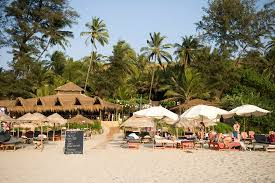

Ashvem Beach
Ashwem Beach is located in the coastal village of Mandrem in North Goa in the Pernem district. It is located between the Morjim beach and Mandrem beach and is very close to the capital city of Panaji. It is one of the most popular beaches in North Goa, along with a few other beaches such as the Junas beach. The reason for its popularity is its extensive stretches of white sand and exotic palm trees that grow along the fringes of this beach. It is also home to the sprawling cashew plantation and people are also attracted to this area due to the thriving fishing and sea-food culture prevalent here.
Despite being one of the more popular beaches in Goa, it is still possible to find secluded spots and ultimate peace in this place. You can relax on the beach while watching the waters of the Arabian Sea, or you can check out one of the many cafes that line the beach. The restaurants on the beach serve fresh seafood and local delicacies using the best ingredients and authentic recipes. Another attractive feature about the beach is that it is very clean and maintained well by the local authorities as well as the tourists who visit the place. When you are in Ashwem Beach, make sure you also catch the breathtaking sunset.